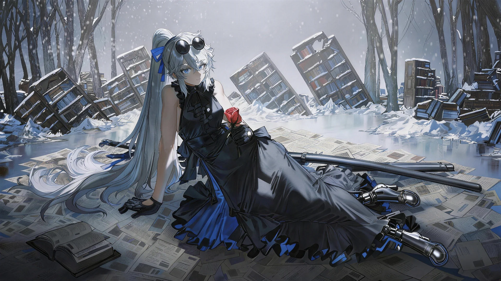

M1 · 冷静，有故事感
克制 / 安静 / 严肃元素较显著
冷灰环境、倾斜书架与散落书页建立故事感；红玫瑰和蓝色服装细节成为局部焦点。
可试用途：重要事件或需要停下来感受的画面。
待判断：是否比你希望的整体体验更沉重？
项目首页原图；细节密度不是本轮要求。
本轮选择氛围。人物画风继续沿 D1，主体轮廓完整、内部色块简略。

克制 / 安静 / 严肃元素较显著
冷灰环境、倾斜书架与散落书页建立故事感；红玫瑰和蓝色服装细节成为局部焦点。
可试用途：重要事件或需要停下来感受的画面。
待判断：是否比你希望的整体体验更沉重？
项目首页原图；细节密度不是本轮要求。

简洁 / 克制 / 容易阅读
保留冷色氛围，减少书页、衣物和书架的内部细节；整体亮度提高，形体由大色块组织。
可试用途：日常探索，保留严肃题材的克制气质。
待判断：是否足够轻松，或颜色仍偏单一？
已有内置生图小样 A；未定稿。

通透 / 舒服 / 冷暖协调
暖阳、浅蓝天空和蓝灰阴影，让同一场景更轻快；书架与散落书页继续保留题材的故事线索。
可试用途：首页、日常探索或休整；建议先作为整体氛围候选。
待判断：是否过于温暖，削弱了你想保留的严肃感？
已有内置生图小样 B；未定稿。


① 整体氛围更接近 M1、M2，还是 M3？也可以指定混合。
② 首页与日常探索是否用同一种氛围？严肃事件是否允许更冷、更暗？
选定后记录情绪基准，再收敛风格小样；画法与情绪分别确认。